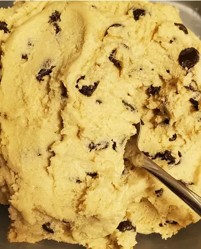
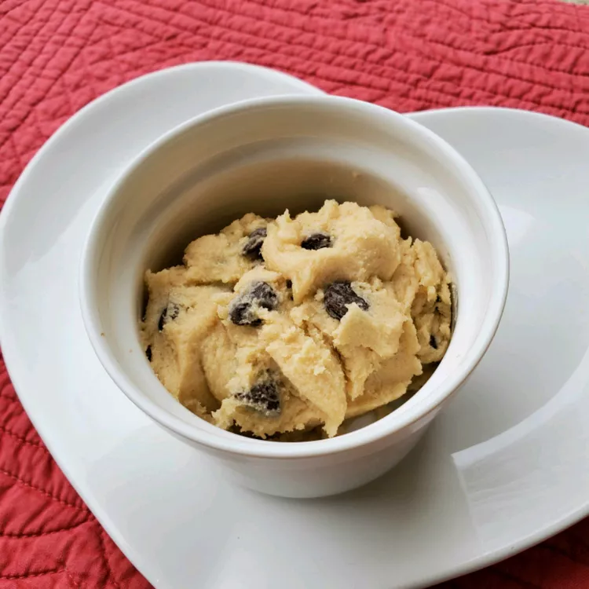

Edible Cookie Dough

Description
This edible cookie dough recipe is egg-free and will satisfy any cravings for chocolate chip cookies without the wait. I have made this with friends before and they said that they loved the taste. So do I. The leftovers will keep in the freezer for up to 3 months.
Ingredients:
- 1 cup all-purpose flour
- ¾ cup packed brown sugar
- ½ cup butter
- 1 teaspoon vanilla extract
- ½ teaspoon salt
- 2 tablespoons milk
- ½ cup milk chocolate chips
- ½ cup mini chocolate chips
Steps:
- To heat-treat your flour so it is safe to use: Place flour in a microwave-safe dish and cook for 1 minute and 15 seconds, stirring it every 15 seconds. Set aside.

- Beat sugar and butter with an electric mixer in a large bowl until creamy. Beat in vanilla extract and salt. Add heat-treated flour; mix until a crumbly dough forms. Stir in milk until dough is just combined; fold in milk chocolate chips and mini chocolate chips.